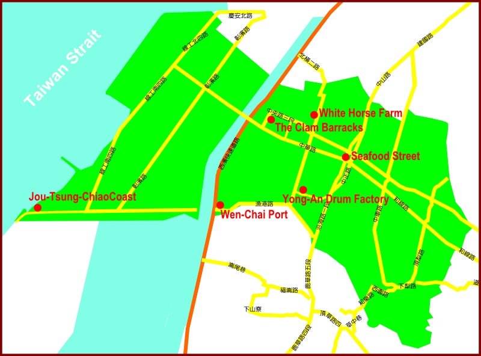

We produced a recommended travel route and itinerary centered around the “White Horse Farm.” You can reference this information and plan your own Tour of the Hsienhsi Area.
Time |
Location |
Activities |
10:00 |
White Horse Farm |
After listening to the presentation, visitors are divided into groups to produce salted eggs, produce wine, and experience horseback riding (reservations required) |
12:00 |
Eat lunch at the Hsienhsi Seafood Street |
Take a short rest and prepare for the afternoons itinerary. |
13:00 |
The Clam Barracks |
Take a look at the old historical buildings. The local artist will teach you how to make dough people. |
14:00 |
Yong-An Drum Factory |
Listen to the owner introduce traditional methods of drum production and experience the fun of drumming (reservations required) |
15:00 |
Jou-Tsung-Chiao Coast |
Go bird watching, visit the oyster farm, chill out at the beach, fish in the sea, and horseback riding on the beach (make reservations with the White Horse Farm) |
16:30 |
Wen-Chai Port |
Come and see the scenery at this fishing port, buy some freshly caught fish products, eat some fresh seafood, and go home with your hearts and packs full of souvenirs and wonderful memories. |
Route Map

| White Horse Farm |
|
| This is the main subject of our project, come here early in the morning, make some DIY salted eggs, produce wine, ride a horse, and experience the owner’s passionate and charming interaction. Don’t forget to call to make reservations! |
Address: No.115, Ln. 896, Sec. 2, Chungyang Rd., Hsienhsi Township
Telephone: 04-7580930 |
| Hsienhsi Seafood Street |
|
| The Chungcheng Road and Yanhai Road area around Route 17 has many seafood restaurants. The seafood here mostly comes from the local Wenchai Port, and is freshly caught. The owners are very friendly and often teach you some seafood knowledge! Be sure to come here for a seafood feast. |
| Address: Route 17 near Chungcheng Road and Yanhai Road |
| The Clam Barracks |
|
| These buildings were left here by the Hsienhsi Naval Base that used to be stationed here. There are a total of 11 buildings, all of which have a history of 50 years. The entrance is built with shells from the sea and says “Never Forget our Goal,” which serves as a spiritual fortress. The bunkers here are full of battlefield colors, and the County Administrative Office have planned this area as an art village and seaside ecology recreational area. In addition to the special building that can allow artists to come and occupy, you can also see fish, shrimps, and even crabs in the ditches nearby, there is virtually no pollution here, and this area is suitable for tourists and visitors of all ages. |
| Address: No.71-89, Ln. 818, Chunghua Rd., Yupu Village |
| Yong-An Drum Factory |
|
| Handed down from father to son for three generations, the Yong-An Drum Factory has 60 years of history. They insist on making completely hand-made drums, preserving traditional drum-making techniques. Whenever tourists come to visit, the owner is very friendly and is eager to introduce and explain the detailed process for making traditional drums. Remember to make phone reservations! |
Address: No.48, Gounei Rd., Gounei Village
Telephone: 04-7580841 |
| Jou-Tsung-Chiao Coast |
|
| The coastal shoreline formed out of stacked wave blocks, is commonly known as Jou-Tsung-Chiao Coast. This is a heaven for wild birds, and there is a bird watching platform for visitors to experience bird watching. The embankment is the best possible place for sea fishing, and during low tide, you can dig for Red Mouthed Clams and Monkey Shrimps; you can also experience the sight of many clam farmers harvesting their clams. Recently, many wind turbines have been installed in the area, which are not only in line with global energy trends, but also provides excellent material for education on energy utilization. (If you wish to engage in water activities, you must first look up the time for high tide and low tide.) |
| Address: The south-western corner of the Hsienhsi area in the Changhua Coastal Industrial Park |
| Wen-Chai Port |
|
| Visitors come here to listen to the sound of the waves, to enjoy the scenery at the pier from the observation deck, and most importantly, to get a taste of the delicious seafood offered here. Every day, at about three or four o’clock in the afternoon, the fishing boats that have gone out to sea return to the pier with their loads of fresh seafood. Visitors can purchase freshly caught seafood to take home and cook, or they can choose to bring the seafood to a nearby restaurant to cook and serve for them. We guarantee that the seafood here will impress you, and more importantly, your taste buds. |
| Address: the Wenchai Village, on Route 61, enter from the under the bridge on the Western Coastal Expressway |

▲TOP |
|